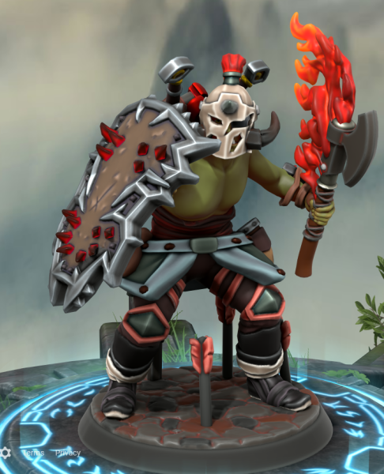
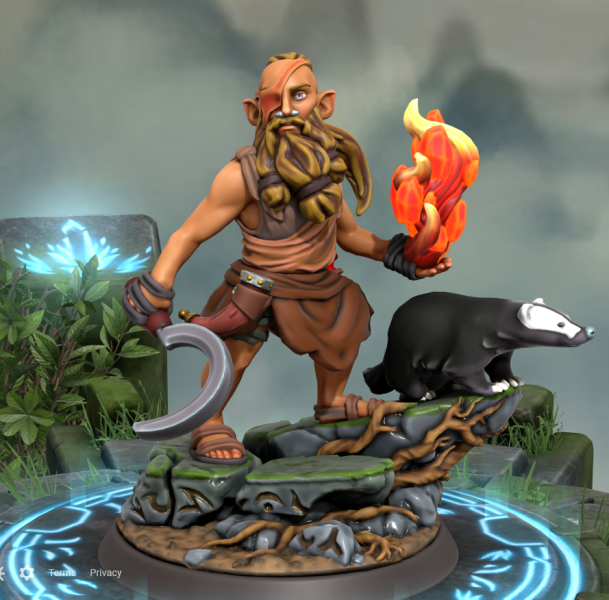
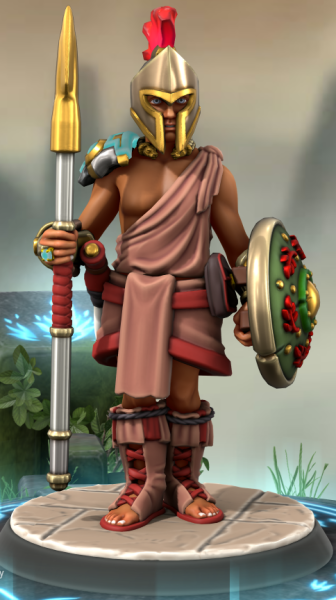
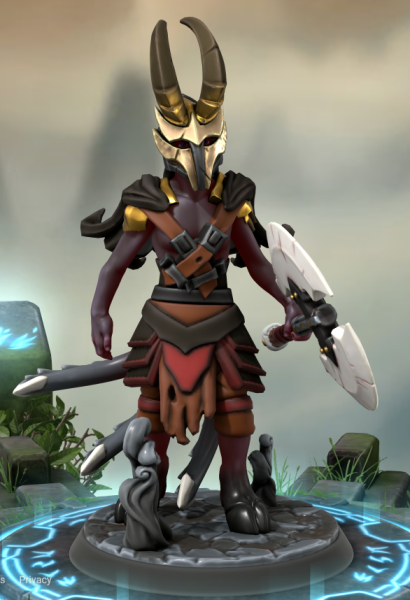
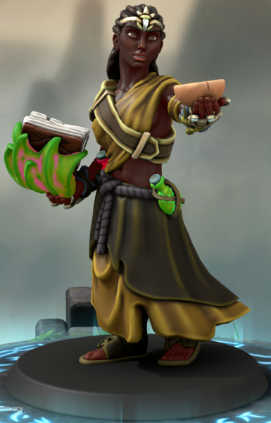
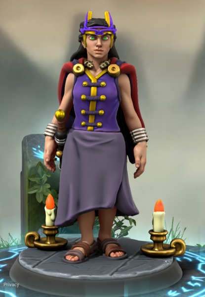
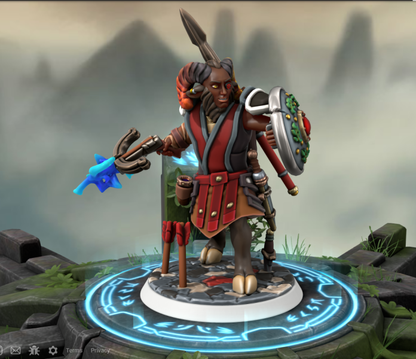

Pyrrhos

Tythalamos the Unsung: An Orcish warlord who led his whole tribe into a massive battle over ownership of their ancestral land against a large number of soldiers. His entire tribe was wiped out in the battle but he himself killed every last enemy there. As he stood there alone on the blood soaked battlefield, the bodies of all his tribe members and enemies alike laying dead in the dirt, he shouted a battlecry so loud it could be heard miles away. Before he left the battlefield he took the helmet from the enemy commanders head and refashioned it to his liking before putting it on and never taking it off. It is said that his burning rage to avenge his tribe caused his axe to be engulfed in unquenchable flames.

Lucienos the Rebel; infamous throughout Kishori, Lucienos is hated by his fellow Halflings, yet loved by the Goblins they have enslaved. Once a merchant's son, Lucienos was banished to the fields as a slave after stealing from the local lord. Lucienos learned how to work the land, and befriended the Goblins enslaved there. Soon, after bargaining with an unknown god in a vision, Lucienos gained magical powers. He razed the fields that he and his new goblinoid family were forced to work on, and killed his overseer. He led all the goblinoid slaves of his town into Northern Calatios. Afterwards, Lucienos began organizing the liberation of other Goblins in Kishori, and led concentrated raids to free the slaves. Kishori has attempted to track him and the Goblins down, but they have not been successful...

The Calatian Royal Guard: Equally subject to envy and pity, there are 24 royal Calatian guards that protect the sacred family. Their only purpose in life is to ensure that the empress and her relatives are never harmed; they don't care if they have to sacrifice Calatian citizens, political representatives, or even themselves to protect the family. Each wields a royal spear, ceremonial shield, and a kukri to fight with, and the guards themselves are chosen through only the most arduous tests. Around their necks, they wear a rigid gold necklace adorned with the heads of lions to symbolise their ferocity and loyalty to the sacred family. On their right ring finger, they wear a diamond ring to symbolise their devotion to the safety of the empress.

Some consider him a terrorist, others a myth. Regardless, as more and more disappear inside the Southern Woods of Drusque, many of the country's citizens have begun to suspect that Themistokolis is more than just a wive's tale. He is depicted as a Satyr free of any inhibition, willing to indulge any depraved temptation inside his head. Said temptations revolve around decapitation, mutilation, and murder. According to the wive's tale from which Themistokolis sprang, he was a young and spry prince who partied every day and every night. This prince's parties were renowned throughout old Drusque, and all of the country's affluent flocked to these events. The prince indulged many vices at these parties, and was most likely addicted to every substance on the planet. However, it all had to end. One night, a spy slipped a bit of poison into the prince's wine, which the prince promptly drank. A few hours later, the prince lay dying on the floor. The goddess Tiya gave him a choice; succumb, or live on in a new form...

Far down south, when the dense jungles of Orestes turn to swamp, the people of Kalistos dwell. A people with a culture deeply rooted in their lifestyle, the Kalashtar possess strange, esoteric forms of magic that have not been seen outside Orestes' swamps for millenia. Their power comes from trapped quori (dream spirits), each kept in a sealed jar belonging to an individual family. While some consider the Kalashtar tribalistic and primative, Shamans such as the one pictured can kill you in your dreams over and over again, until you die in real life...

Empress Seneca d'Kaesar
